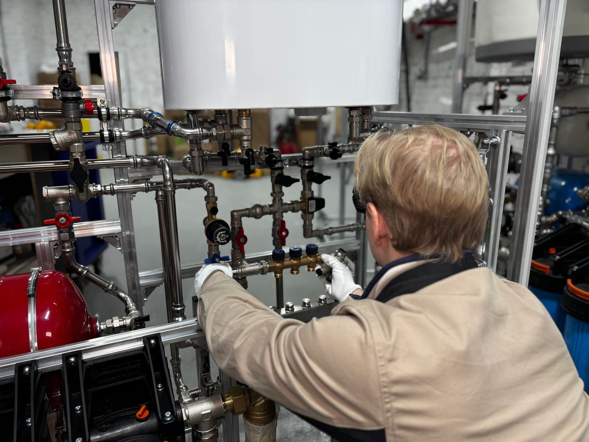
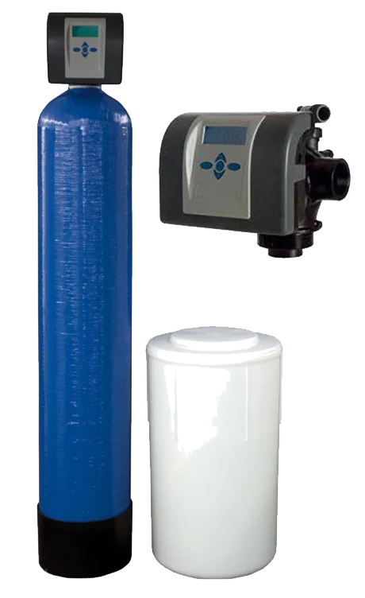
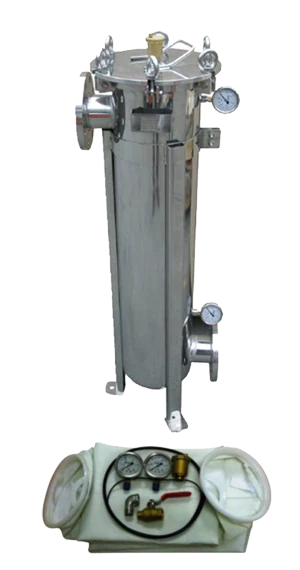
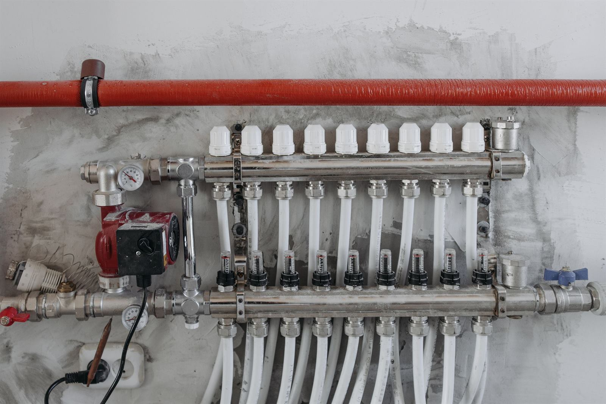
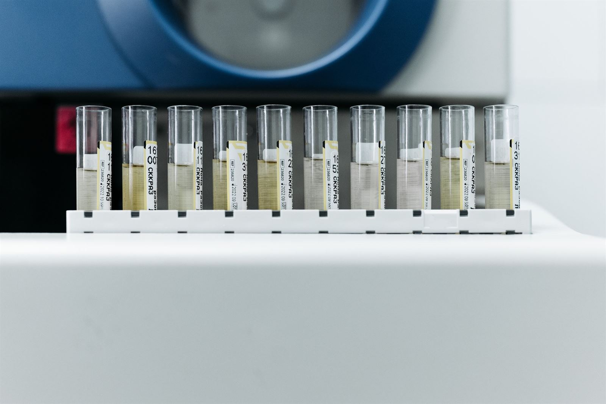
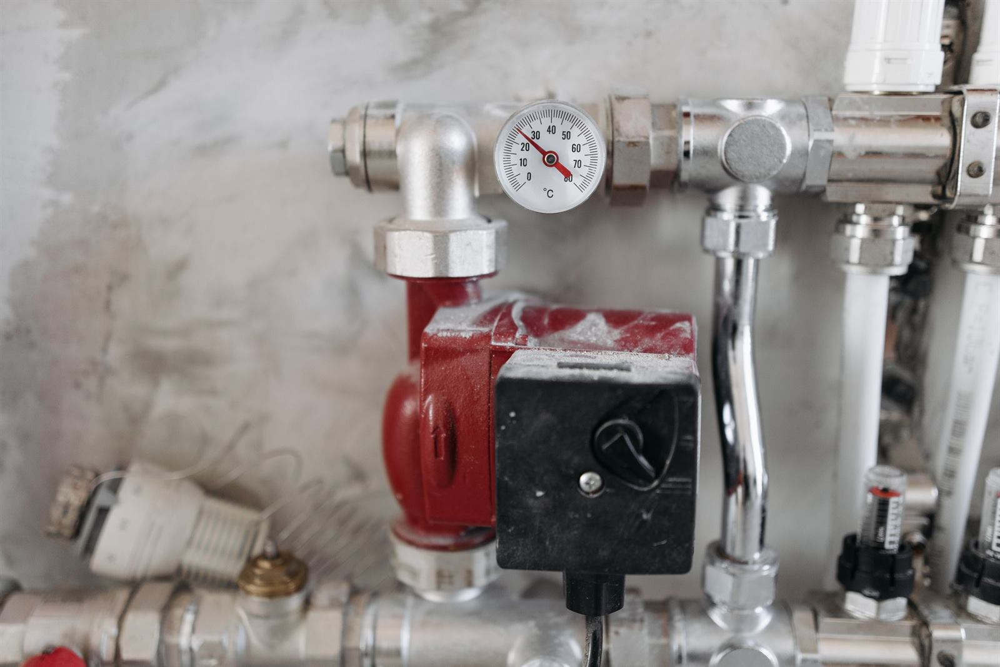

Accueil / Collectif & tertiaire
De l'étude technique au SAV en direct.
Forte de ses 25 années d'expérience, H2O Partner vous propose l'étude technique pour le bon choix du matériel et de son dimensionnement, puis vous accompagne jusqu'à l'exploitation.

Du chantier à l'exploitation.
Étude technique
Le bon choix du matériel et de son dimensionnement, selon votre eau, vos débits et votre installation.
Livraison sur le chantier
Livraison du matériel jusqu'au chantier, avec des explications claires à vos techniciens.
Mise en service
Par une équipe spécialisée, une fois le matériel installé.
Entretien, SAV et garantie en direct
Nous suivons le matériel que nous avons fourni, sans intermédiaire.

Adoucisseurs CLACK.
Une gamme dimensionnée pour assurer une longévité maximale à tous vos appareils.
| Modèle | Débit de pointe | Résine |
|---|---|---|
| CLACK CK-1 | 6,1 m³/h | 50 à 250 L |
| CLACK WS125CK | 7 m³/h | 50 à 250 L |
| CLACK WS1,5CK | 16,4 m³/h | 50 à 500 L |
| CLACK WS2CK | 26 m³/h | 75 à 700 L |
CLACK WS2HF / WS3HF : documentation sur demande.
Documentation des vannes CLACK (PDF)
Filtre magnétique à poche.
Ce filtre clarificateur en acier inoxydable se monte sur le circuit de retour des eaux de process, chaudes ou glacées. Associé à un produit nettoyant, il filtre toute particule en suspension.
- Filtre mécanique inox avec poche en polypropylène
- Centrale magnétique de 1 à 4 barreaux, qui capte les particules de fer
- Étanchéité par joints EPDM, 3 pieds réglables
- 2 manomètres de contrôle, vanne à bille de dégazage
- Maintenance rapide grâce au couvercle à écrous oreille

Désembouage hydropneumatique.
Pour les circuits de chauffage collectif : écoles, collèges, lycées, mairies, gymnases, Ehpad, hôpitaux, copropriétés…
Avant les travaux
Injection d'un désembouant lent pour faciliter le décollement et la dispersion des boues.
Nettoyage
Hydropneumatique, circuit par circuit ou élément par élément, par isolement.
Contrôle
Analyses de la qualité du travail effectué par un laboratoire indépendant.
Protection
Injection d'un produit de conditionnement des circuits en fin de prestation.

Désinfection sanitaire EFS et ECS.
En préventif après travaux neufs ou en curatif : Ehpad, hôpitaux, cantines, restaurants universitaires, hôtels, gymnases, clubs de vacances…
Protocole ARS
Injection de chlore ou de peroxyde d'hydrogène selon les matériaux en présence.
Contact
Concentration et durée de contact contrôlées par analyse sur l'ensemble des points d'eau.
Rinçage
Contrôlé et analysé sur l'ensemble des points.
Validation
2 à 4 jours après, prélèvements par un laboratoire accrédité COFRAC.

Aussi pour le collectif et le tertiaire.
- Pompe doseuse pour injection de filmogène
- Panneau de chloration
- Adoucisseurs et filtres, suivi des produits de conditionnement des circuits de chauffage

Un projet, un circuit, un réseau ?
Décrivez-nous l'installation : nous préparons l'étude technique ou le devis de prestation.
Demander une étude04 76 06 92 12